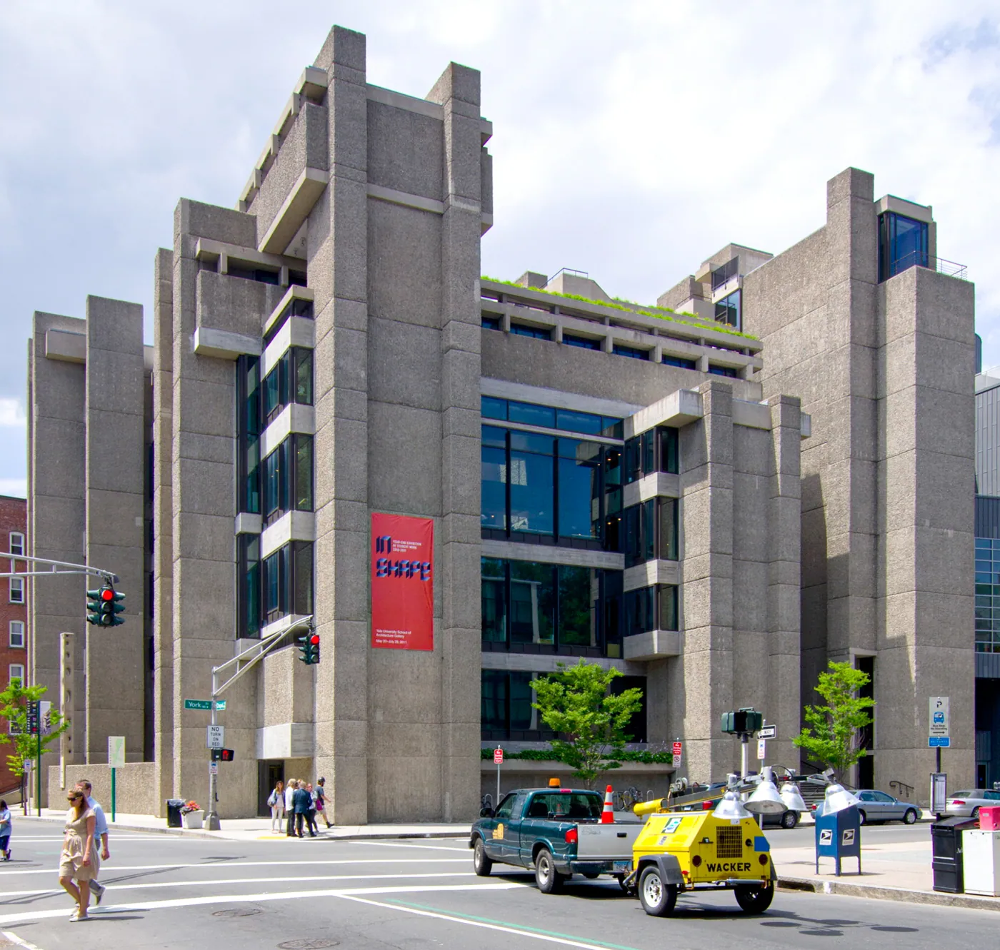
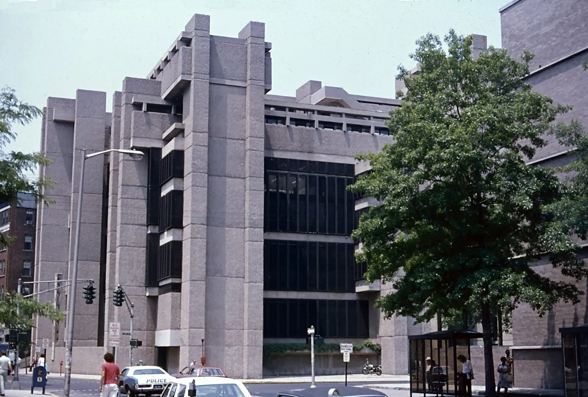
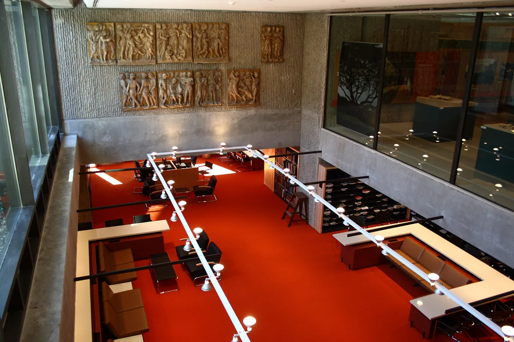

1/8 · Exterior · Rudolph Hall at YalePhoto: Ɱ · CC BY-SA 4.0 · source2/8 · Exterior · Yale Art and Architecture Building (later named Rudoph Hall) in New Haven, SouthPhoto: Peter Christian Riemann · CC BY-SA 4.0 · source

3/8 · ExteriorPhoto: cjreddaway · CC BY 2.0 · source

4/8 · Exterior · Yale Art and Architecture Building (later named Rudoph Hall) in New Haven, SouthPhoto: Peter Christian Riemann · CC BY-SA 4.0 · source5/8 · Interior · Review pit on the 4th floor of Rudolph Hall (formerly Art & Architecture Building), Yale UniversityPhoto: Seth Tisue · CC BY-SA 2.0 · source

6/8 · InteriorPhoto: Sage Ross · CC BY-SA 3.0 · source7/8 · InteriorPhoto: Sage Ross · CC BY-SA 3.0 · source8/8 · Interior · Messy Student Desks at the Yale School of Architecture, 2018Photo: RukshanV · CC BY-SA 4.0 · source